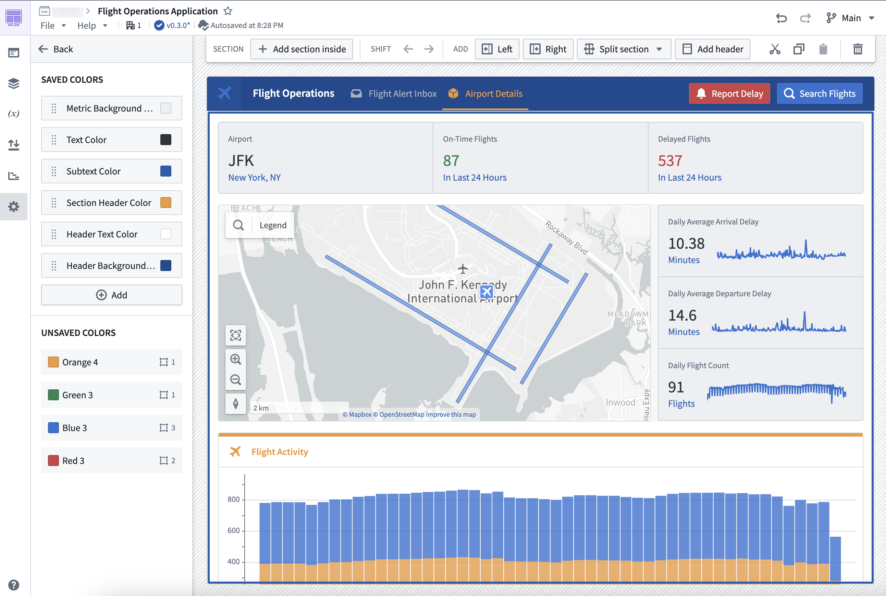
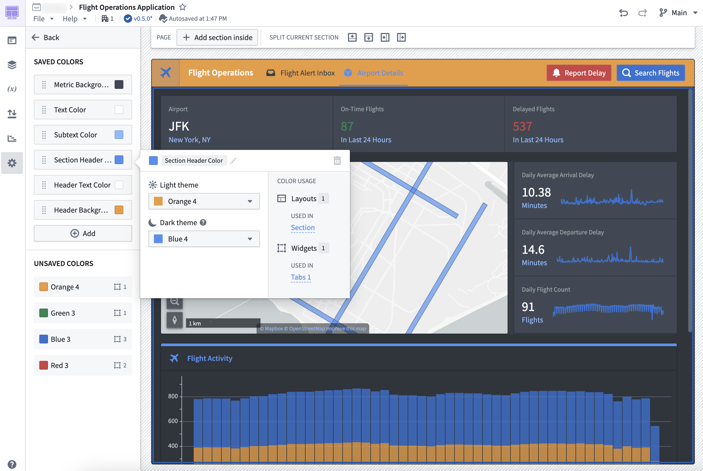

Colors used within a Workshop application can be defined and saved on the module level using Workshopâs used colors feature. This feature allows builders to set a color palette for an application and easily swap out colors used throughout their module.
Access the Used colors panel by navigating to a moduleâs Settings tab in edit mode. The panel consists of two main sections: Saved colors and Unsaved colors.
Note that usage of intent colors will not be displayed in the Used colors panel.

Saved colors are defined at the module level. Add colors to the Saved colors section to make them selectable when configuring custom colors in layouts and widgets, including section and page backgrounds. You can rename saved colors, set separate colors for light and dark modes, and view where each color is used across layouts and widgets in your module. When you edit a saved color, the change propagates to all layouts, sections, and widgets that reference it, so you can update colors across your module in one place.

Unsaved colors represent custom colors used in layouts and widgets throughout the module that are not defined as saved colors. You can select the hex code of an unsaved color to copy it for use elsewhere, and you can also see the usage of these colors in layouts and widgets within the module.